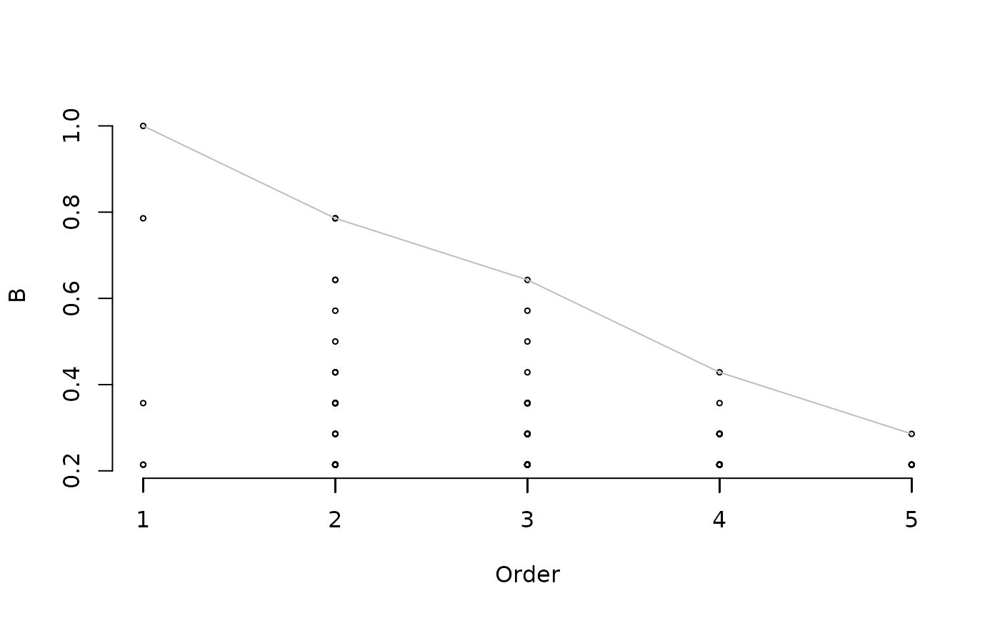

indicators.RdDetermines the indicator value of species combinations.
indicators(X, cluster, group, func="IndVal", min.order = 1, max.order=5, max.indicators=NULL, At=0, Bt=0, sqrtIVt=0, control = how(), permutations = NULL, print.perm = FALSE, nboot.ci=NULL, alpha.ci=0.05, XC=TRUE, enableFixed = FALSE, verbose = FALSE) # S3 method for indicators print (x, At=0, Bt=0, sqrtIVt=0, alpha = 1.0, selection=NULL, confint=FALSE,...) # S3 method for indicators plot (x, type="sqrtIV", maxline=TRUE,...) # S3 method for indicators summary (object,...)
| X | A community data table with sites in rows and species in columns. This table can contain either presence-absence or abundance data. |
|---|---|
| x | An object of class 'indicators'. |
| object | An object of class 'indicators'. |
| cluster | A vector containing the classification of sites into site groups. |
| group | The label corresponding to the target site group. |
| min.order, max.order | Minimum and maximum number of species conforming species combinations. |
| max.indicators | Maximum number of valid indicators to be kept. If |
| func | The indicator value variant to be used, either "IndVal" (non-equalized) or "IndVal.g" (group-equalized). |
| At | Threshold for positive predictive value used to select valid indicators. Combinations with lower values are not kept. |
| Bt | Threshold for sensitivity used to select valid indicators. Combinations with lower values are not kept. |
| sqrtIVt | Threshold for (square root of) indicator value. Combinations with lower values are not kept. |
| alpha | Threshold for statistical significance of indicator value. Combinations with higher p-values are not kept. |
| control | a list of control values describing properties of the permutation test design, as returned by a call to |
| permutations | a custom matrix of permutations, to be used if |
| print.perm | If TRUE, prints permutation numbers after each set of 100 permutations. |
| nboot.ci | Number of bootstrap samples for confidence intervals. If |
| alpha.ci | Error in confidence intervals. |
| XC | If TRUE, outputs the abundance/occurrence matrix of species combinations. |
| enableFixed | If TRUE, uses species that occur in all sites as fixed elements and creates combinations with the remaining ones. |
| verbose | If TRUE, prints the results of each step. |
| selection | A logical vector used to restrict, a priori, the species combinations to be printed. |
| confint | Flag to indicate that confidence interval bounds are desired when printing. |
| type | Statistic to plot. Accepted values are "IV" (indicator value), "sqrtIV" (square root of indicator value), "A", "LA", "UA", (positive predictive value and confidence limits), "B", "LB", "UB" (sensitivity and confidence limits). |
| maxline | Flag to indicate whether a line has to be drawn joining the maximum values for each order of combinations. |
| ... | Additional arguments for functions |
Function indicators creates explores the indicator value of the simultaneous occurrence of sets of species (i.e. species combinations). The method is described in De Cáceres et al. (2012) and is a generalization of the Indicator Value method of Dufrêne & Legendre (1997). The minimum and maximum number of species conforming the species combination can be controlled using min.order or max.order. For each combination of species it determines its positive predictive value (A), sensitivity (B) and the square root of indicator value (sqrtIV). Statistical significance of indicators for the target site group is determined by internal calls to function signassoc. Additionally, if nboot.ci is not null then bootstrap confidence intervals are determined with the specified alpha level, as explained in De Cáceres & Legendre (2009). The combinations to be kept can be restricted to those whose positive predictive value, sensitivity and/or indicator value are equal or greater than input thresholds. Function print allows printing the results in a nice table, whereas summary provides information about candidate species, combinations and coverage of the set of indicators. Function plot draws the statistics against the order (i.e. the number of species) of the combination.
An object of class indicators with:
The vector of initial candidate species.
The vector of species finally selected for combinations.
A matrix describing all the combinations studied.
A matrix containing the abundance/occurrence of each species combination.
Positive predictive power of species combinations. If nboot is not missing then this includes the lower and upper bounds of the confidence interval.
Sensitivity of species combinations. If nboot is not missing then this includes the lower and upper bounds of the confidence interval.
Square root of indicator value of species combinations. If nboot is not missing then this includes the lower and upper bounds of the confidence interval.
P-value of the permutation test of statistical significance.
A logical vector indicating the membership to the target group.
De Cáceres, M., Legendre, P., Wiser, S.K. and Brotons, L. 2012. Using species combinations in indicator analyses. Methods in Ecology and Evolution 3(6): 973-982.
De Cáceres, M. and Legendre, P. 2009. Associations between species and groups of sites: indices and statistical inference. Ecology 90(12): 3566-3574.
Dufrêne, M. and P. Legendre. 1997. Species assemblages and indicator species: The need for a flexible asymetrical approach. Ecological Monographs 67:345-366.
Miquel De Cáceres Ainsa, CTFC
library(stats) data(wetland) ## Loads species data ## Creates three clusters using kmeans wetkm = kmeans(wetland, centers=3) ## Number of sites in each group table(wetkm$cluster)#> #> 1 2 3 #> 14 17 10## Run indicator analysis with species combinations for the first group sc= indicators(X=wetland, cluster=wetkm$cluster, group=1, verbose=TRUE, At=0.5, Bt=0.2)#> Target site group: 1 #> Number of candidate species: 33 #> Number of sites: 41 #> Size of the site group: 14 #> Starting species 1 ... accepted combinations: 0 #> Starting species 2 ... accepted combinations: 0 #> Starting species 3 ... accepted combinations: 16 #> Starting species 4 ... accepted combinations: 32 #> Starting species 5 ... accepted combinations: 32 #> Starting species 6 ... accepted combinations: 79 #> Starting species 7 ... accepted combinations: 79 #> Starting species 8 ... accepted combinations: 82 #> Starting species 9 ... accepted combinations: 88 #> Starting species 10 ... accepted combinations: 88 #> Starting species 11 ... accepted combinations: 88 #> Starting species 12 ... accepted combinations: 92 #> Starting species 13 ... accepted combinations: 92 #> Starting species 14 ... accepted combinations: 92 #> Starting species 15 ... accepted combinations: 112 #> Starting species 16 ... accepted combinations: 115 #> Starting species 17 ... accepted combinations: 115 #> Starting species 18 ... accepted combinations: 115 #> Starting species 19 ... accepted combinations: 115 #> Starting species 20 ... accepted combinations: 120 #> Starting species 21 ... accepted combinations: 136 #> Starting species 22 ... accepted combinations: 139 #> Starting species 23 ... accepted combinations: 143 #> Starting species 24 ... accepted combinations: 144 #> Starting species 25 ... accepted combinations: 144 #> Starting species 26 ... accepted combinations: 144 #> Starting species 27 ... accepted combinations: 144 #> Starting species 28 ... accepted combinations: 144 #> Starting species 29 ... accepted combinations: 144 #> Starting species 30 ... accepted combinations: 144 #> Starting species 31 ... accepted combinations: 144 #> Starting species 32 ... accepted combinations: 144 #> Starting species 33 ... accepted combinations: 144 #> Number of valid combinations: 144 #> Number of remaining species: 15 #> Calculating statistical significance (permutational test)...#> A B sqrtIV p.value #> Phynod 0.9473684 1.0000000 0.9733285 0.005 #> Phynod+Helind 0.9285714 0.7857143 0.8541615 0.005 #> Melcor+Phynod 0.8461538 0.7857143 0.8153742 0.005 #> Phynod+Elesp. 1.0000000 0.6428571 0.8017837 0.005 #> Melcor+Phynod+Helind 0.9000000 0.6428571 0.7606388 0.005 #> Phynod+Helind+Elesp. 1.0000000 0.5714286 0.7559289 0.005 #> Melcor+Phynod+Elesp. 1.0000000 0.5000000 0.7071068 0.005 #> Melcor+Helind 0.7500000 0.6428571 0.6943651 0.005 #> Melcor+Phynod+Helind+Elesp. 1.0000000 0.4285714 0.6546537 0.005 #> Phynod+Orysp. 1.0000000 0.4285714 0.6546537 0.005 #> Helind 0.5416667 0.7857143 0.6523766 0.020 #> Melcor+Elesp. 0.7777778 0.5000000 0.6236096 0.010 #> Helind+Elesp. 0.6428571 0.5714286 0.6060915 0.025 #> Melcor+Helind+Elesp. 0.8571429 0.4285714 0.6060915 0.005 #> Echpas+Phynod 1.0000000 0.3571429 0.5976143 0.005 #> Phynod+Echell+Helind+Elesp. 1.0000000 0.3571429 0.5976143 0.005 #> Phynod+Echell+Elesp. 1.0000000 0.3571429 0.5976143 0.005 #> Phynod+Helind+Orysp. 1.0000000 0.3571429 0.5976143 0.005 #> Echell+Helind+Elesp. 1.0000000 0.3571429 0.5976143 0.005 #> Sessp.+Phynod 0.7777778 0.4285714 0.5773503 0.020 #> Pancam+Phynod 0.7500000 0.4285714 0.5669467 0.020 #> Phynod+Echell 0.9000000 0.3571429 0.5669467 0.015 #> Aesind 0.8571429 0.3571429 0.5532833 0.010 #> Aesind+Phynod 0.8571429 0.3571429 0.5532833 0.010 #> Pancam+Phynod+Helind 0.8333333 0.3571429 0.5455447 0.010 #> Aesind+Phynod+Helind 0.8333333 0.3571429 0.5455447 0.010 #> Aesind+Helind 0.8333333 0.3571429 0.5455447 0.010 #> Phynod+Echell+Helind 0.8333333 0.3571429 0.5455447 0.015 #> Echell+Elesp. 0.8333333 0.3571429 0.5455447 0.015 #> Pancam+Phynod+Helind+Orysp. 1.0000000 0.2857143 0.5345225 0.010 #> Pancam+Phynod+Orysp. 1.0000000 0.2857143 0.5345225 0.010 #> Melcor+Phynod+Echell+Helind+Elesp. 1.0000000 0.2857143 0.5345225 0.010 #> Melcor+Phynod+Echell+Elesp. 1.0000000 0.2857143 0.5345225 0.010 #> Melcor+Phynod+Orysp. 1.0000000 0.2857143 0.5345225 0.005 #> Melcor+Echell+Helind+Elesp. 1.0000000 0.2857143 0.5345225 0.010 #> Melcor+Echell+Elesp. 1.0000000 0.2857143 0.5345225 0.010 #> Aesind+Phynod+Helind+Elesp. 1.0000000 0.2857143 0.5345225 0.005 #> Aesind+Phynod+Elesp. 1.0000000 0.2857143 0.5345225 0.005 #> Aesind+Helind+Elesp. 1.0000000 0.2857143 0.5345225 0.005 #> Aesind+Elesp. 1.0000000 0.2857143 0.5345225 0.005 #> Phynod+Orysp.+Elesp. 1.0000000 0.2857143 0.5345225 0.010 #> Pancam+Melcor+Phynod 0.7142857 0.3571429 0.5050763 0.035 #> Pancam+Helind 0.7142857 0.3571429 0.5050763 0.035 #> Melcor+Sessp.+Phynod 0.7142857 0.3571429 0.5050763 0.040 #> Pancam+Melcor+Phynod+Helind 0.8000000 0.2857143 0.4780914 0.040 #> Pancam+Helind+Orysp. 0.8000000 0.2857143 0.4780914 0.020 #> Melcor+Aesind 0.8000000 0.2857143 0.4780914 0.035 #> Melcor+Aesind+Phynod 0.8000000 0.2857143 0.4780914 0.035 #> Melcor+Aesind+Phynod+Helind 0.8000000 0.2857143 0.4780914 0.035 #> Melcor+Aesind+Helind 0.8000000 0.2857143 0.4780914 0.035 #> Melcor+Sessp.+Phynod+Helind 0.8000000 0.2857143 0.4780914 0.035 #> Melcor+Sessp.+Helind 0.8000000 0.2857143 0.4780914 0.035 #> Melcor+Phynod+Echell 0.8000000 0.2857143 0.4780914 0.030 #> Melcor+Phynod+Echell+Helind 0.8000000 0.2857143 0.4780914 0.030 #> Sessp.+Phynod+Helind 0.8000000 0.2857143 0.4780914 0.035 #> Echell+Helind 0.6250000 0.3571429 0.4724556 0.085 #> Alyvag 1.0000000 0.2142857 0.4629100 0.030 #> Alyvag+Aesind 1.0000000 0.2142857 0.4629100 0.030 #> Alyvag+Aesind+Phynod 1.0000000 0.2142857 0.4629100 0.030 #> Alyvag+Aesind+Phynod+Helind 1.0000000 0.2142857 0.4629100 0.030 #> Alyvag+Aesind+Phynod+Helind+Orysp. 1.0000000 0.2142857 0.4629100 0.030 #> Alyvag+Aesind+Phynod+Orysp. 1.0000000 0.2142857 0.4629100 0.030 #> Alyvag+Aesind+Helind 1.0000000 0.2142857 0.4629100 0.030 #> Alyvag+Aesind+Helind+Orysp. 1.0000000 0.2142857 0.4629100 0.030 #> Alyvag+Aesind+Orysp. 1.0000000 0.2142857 0.4629100 0.030 #> Alyvag+Phynod 1.0000000 0.2142857 0.4629100 0.030 #> Alyvag+Phynod+Helind 1.0000000 0.2142857 0.4629100 0.030 #> Alyvag+Phynod+Helind+Orysp. 1.0000000 0.2142857 0.4629100 0.030 #> Alyvag+Phynod+Orysp. 1.0000000 0.2142857 0.4629100 0.030 #> Alyvag+Helind 1.0000000 0.2142857 0.4629100 0.030 #> Alyvag+Helind+Orysp. 1.0000000 0.2142857 0.4629100 0.030 #> Alyvag+Orysp. 1.0000000 0.2142857 0.4629100 0.030 #> Pancam+Melcor+Phynod+Helind+Orysp. 1.0000000 0.2142857 0.4629100 0.025 #> Pancam+Melcor+Phynod+Orysp. 1.0000000 0.2142857 0.4629100 0.025 #> Melcor+Eupvac+Phynod+Orysp. 1.0000000 0.2142857 0.4629100 0.040 #> Melcor+Echpas+Phynod 1.0000000 0.2142857 0.4629100 0.050 #> Melcor+Carhal 1.0000000 0.2142857 0.4629100 0.030 #> Melcor+Carhal+Phynod 1.0000000 0.2142857 0.4629100 0.030 #> Melcor+Carhal+Phynod+Helind 1.0000000 0.2142857 0.4629100 0.030 #> Melcor+Carhal+Helind 1.0000000 0.2142857 0.4629100 0.030 #> Melcor+Aesind+Phynod+Helind+Elesp. 1.0000000 0.2142857 0.4629100 0.045 #> Melcor+Aesind+Phynod+Elesp. 1.0000000 0.2142857 0.4629100 0.045 #> Melcor+Aesind+Helind+Elesp. 1.0000000 0.2142857 0.4629100 0.045 #> Melcor+Aesind+Elesp. 1.0000000 0.2142857 0.4629100 0.045 #> Melcor+Sessp.+Phynod+Helind+Elesp. 1.0000000 0.2142857 0.4629100 0.045 #> Melcor+Sessp.+Phynod+Elesp. 1.0000000 0.2142857 0.4629100 0.045 #> Melcor+Sessp.+Helind+Elesp. 1.0000000 0.2142857 0.4629100 0.045 #> Melcor+Sessp.+Elesp. 1.0000000 0.2142857 0.4629100 0.045 #> Melcor+Phynod+Helind+Ipoaqu+Elesp. 1.0000000 0.2142857 0.4629100 0.040 #> Melcor+Phynod+Helind+Orysp. 1.0000000 0.2142857 0.4629100 0.025 #> Melcor+Phynod+Ipoaqu+Elesp. 1.0000000 0.2142857 0.4629100 0.040 #> Eupvac+Echpas+Phynod 1.0000000 0.2142857 0.4629100 0.035 #> Eupvac+Phynod+Orysp. 1.0000000 0.2142857 0.4629100 0.040 #> Echpas+Phynod+Helind 1.0000000 0.2142857 0.4629100 0.035 #> Echpas+Phynod+Orysp. 1.0000000 0.2142857 0.4629100 0.030 #> Echpas+Phynod+Elesp. 1.0000000 0.2142857 0.4629100 0.035 #> Carhal+Phynod 1.0000000 0.2142857 0.4629100 0.030 #> Carhal+Phynod+Helind 1.0000000 0.2142857 0.4629100 0.030 #> Aesind+Phynod+Echell+Helind+Elesp. 1.0000000 0.2142857 0.4629100 0.040 #> Aesind+Phynod+Echell+Elesp. 1.0000000 0.2142857 0.4629100 0.040 #> Aesind+Phynod+Helind+Orysp. 1.0000000 0.2142857 0.4629100 0.030 #> Aesind+Phynod+Orysp. 1.0000000 0.2142857 0.4629100 0.030 #> Aesind+Echell+Helind+Elesp. 1.0000000 0.2142857 0.4629100 0.040 #> Aesind+Echell+Elesp. 1.0000000 0.2142857 0.4629100 0.040 #> Aesind+Helind+Orysp. 1.0000000 0.2142857 0.4629100 0.030 #> Aesind+Orysp. 1.0000000 0.2142857 0.4629100 0.030 #> Cyprot+Sessp.+Phynod 1.0000000 0.2142857 0.4629100 0.025 #> Cyprot+Phynod 1.0000000 0.2142857 0.4629100 0.025 #> Sessp.+Phynod+Helind+Elesp. 1.0000000 0.2142857 0.4629100 0.045 #> Sessp.+Phynod+Elesp. 1.0000000 0.2142857 0.4629100 0.045 #> Phynod+Helind+Ipoaqu+Elesp. 1.0000000 0.2142857 0.4629100 0.040 #> Phynod+Helind+Orysp.+Elesp. 1.0000000 0.2142857 0.4629100 0.030 #> Phynod+Ipoaqu+Elesp. 1.0000000 0.2142857 0.4629100 0.040 #> Pancam+Melcor+Helind 0.6666667 0.2857143 0.4364358 0.085 #> Melcor+Echell+Helind 0.6666667 0.2857143 0.4364358 0.095 #> Eupvac+Phynod 0.6666667 0.2857143 0.4364358 0.095 #> Carhal+Helind 0.8000000 0.2142857 0.4140393 0.075 #> Phynod+Helind+Ipoaqu 0.8000000 0.2142857 0.4140393 0.070 #> Phynod+Ipoaqu 0.8000000 0.2142857 0.4140393 0.070 #> Helind+Ipoaqu+Elesp. 0.8000000 0.2142857 0.4140393 0.095 #> Pancam+Melcor+Helind+Orysp. 0.7500000 0.2142857 0.4008919 0.070 #> Melcor+Phynod+Helind+Ipoaqu 0.7500000 0.2142857 0.4008919 0.090 #> Melcor+Phynod+Ipoaqu 0.7500000 0.2142857 0.4008919 0.090 #> Melcor+Helind+Ipoaqu+Elesp. 0.7500000 0.2142857 0.4008919 0.110 #> Melcor+Ipoaqu+Elesp. 0.7500000 0.2142857 0.4008919 0.110 #> Echpas+Elesp. 0.7500000 0.2142857 0.4008919 0.115 #> Aesind+Phynod+Echell 0.7500000 0.2142857 0.4008919 0.135 #> Aesind+Phynod+Echell+Helind 0.7500000 0.2142857 0.4008919 0.135 #> Aesind+Echell 0.7500000 0.2142857 0.4008919 0.135 #> Aesind+Echell+Helind 0.7500000 0.2142857 0.4008919 0.135 #> Pancam+Orysp. 0.5000000 0.2857143 0.3779645 0.215 #> Carhal 0.6666667 0.2142857 0.3779645 0.145 #> Ipoaqu+Elesp. 0.6666667 0.2142857 0.3779645 0.135 #> Pancam+Melcor+Sessp.+Phynod 0.6000000 0.2142857 0.3585686 0.215 #> Pancam+Sessp.+Phynod 0.6000000 0.2142857 0.3585686 0.215 #> Melcor+Eupvac+Phynod 0.6000000 0.2142857 0.3585686 0.195 #> Melcor+Helind+Ipoaqu 0.6000000 0.2142857 0.3585686 0.195 #> Melcor+Helind+Orysp. 0.6000000 0.2142857 0.3585686 0.175 #> Sessp.+Helind+Elesp. 0.6000000 0.2142857 0.3585686 0.295 #> Helind+Ipoaqu 0.5714286 0.2142857 0.3499271 0.200 #> Pancam+Melcor+Orysp. 0.5000000 0.2142857 0.3273268 0.280 #> Melcor+Eupvac+Orysp. 0.5000000 0.2142857 0.3273268 0.275 #> Echpas+Helind 0.5000000 0.2142857 0.3273268 0.320 #> Cyprot+Sessp. 0.5000000 0.2142857 0.3273268 0.280## Plots positive predictive power and sensitivity against the order of ## combinations plot(sc, type="A")## Run indicator analysis with species combinations for the first group, ## but forcing 'Orysp' to be in all combinations sc2= indicators(X=wetland, cluster=wetkm$cluster, group=1, verbose=TRUE, At=0.5, Bt=0.2, enableFixed=TRUE)#> Target site group: 1 #> Number of candidate species: 33 #> Number of sites: 41 #> Size of the site group: 14 #> Number of fixed species: 1 #> Phynod #> 21 #> Number of species to combine: 32 #> Starting species 1 ... accepted combinations: 1 #> Starting species 2 ... accepted combinations: 1 #> Starting species 3 ... accepted combinations: 9 #> Starting species 4 ... accepted combinations: 19 #> Starting species 5 ... accepted combinations: 19 #> Starting species 6 ... accepted combinations: 46 #> Starting species 7 ... accepted combinations: 46 #> Starting species 8 ... accepted combinations: 49 #> Starting species 9 ... accepted combinations: 53 #> Starting species 10 ... accepted combinations: 53 #> Starting species 11 ... accepted combinations: 53 #> Starting species 12 ... accepted combinations: 55 #> Starting species 13 ... accepted combinations: 55 #> Starting species 14 ... accepted combinations: 55 #> Starting species 15 ... accepted combinations: 65 #> Starting species 16 ... accepted combinations: 67 #> Starting species 17 ... accepted combinations: 67 #> Starting species 18 ... accepted combinations: 67 #> Starting species 19 ... accepted combinations: 67 #> Starting species 20 ... accepted combinations: 71 #> Starting species 22 ... accepted combinations: 75 #> Starting species 23 ... accepted combinations: 81 #> Starting species 24 ... accepted combinations: 83 #> Starting species 25 ... accepted combinations: 85 #> Starting species 26 ... accepted combinations: 86 #> Starting species 27 ... accepted combinations: 86 #> Starting species 28 ... accepted combinations: 86 #> Starting species 29 ... accepted combinations: 86 #> Starting species 30 ... accepted combinations: 86 #> Starting species 31 ... accepted combinations: 86 #> Starting species 32 ... accepted combinations: 86 #> Starting species 33 ... accepted combinations: 86 #> Number of valid combinations: 86 #> Number of remaining species: 15 #> Calculating statistical significance (permutational test)...